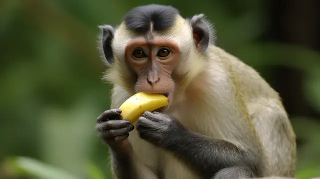
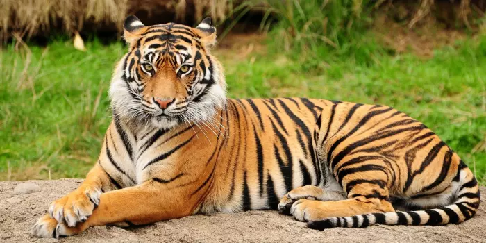
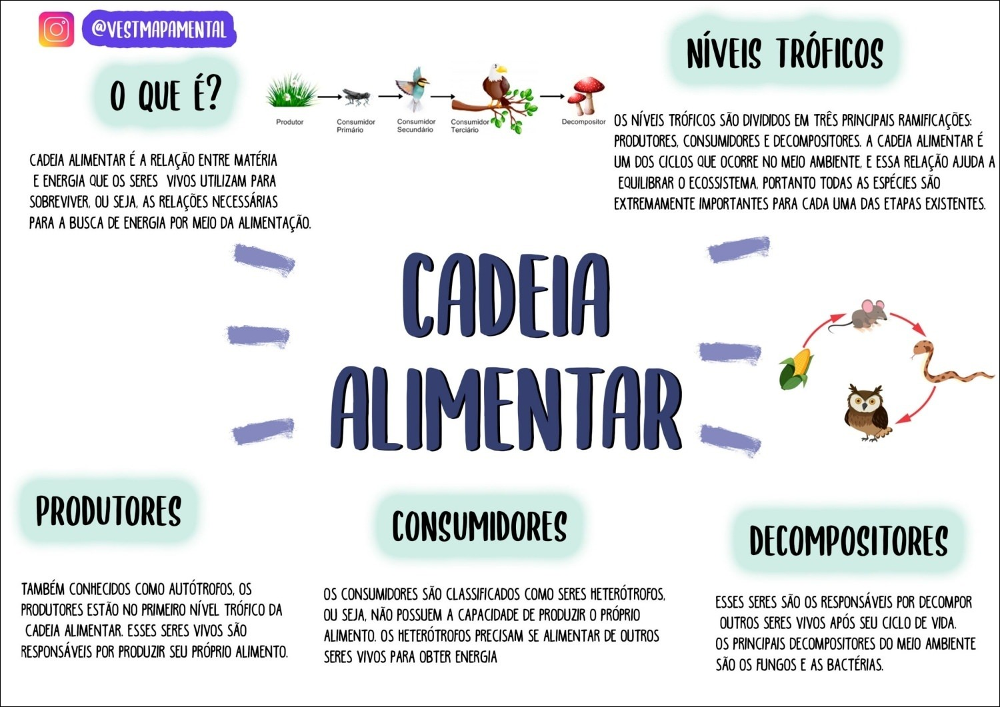

Escolha o que deseja aprender!

Cadeia Alimentar
Compreenda o que é uma cadeia alimentar. Conheça também os diferentes
níveis tróficos existentes e como a energia flui em cada nível.

Teia Alimentar
Entenda como as relações alimentares é um ponto indispensável pra
conseguir compreender por completo o funcionamento do ecossistema em si.

outros
Resumo de todo o conteúdo, dicas e curiosidades sobre Cadeia Alimentar e
Teia Alimentar aprendido ao longo do site.